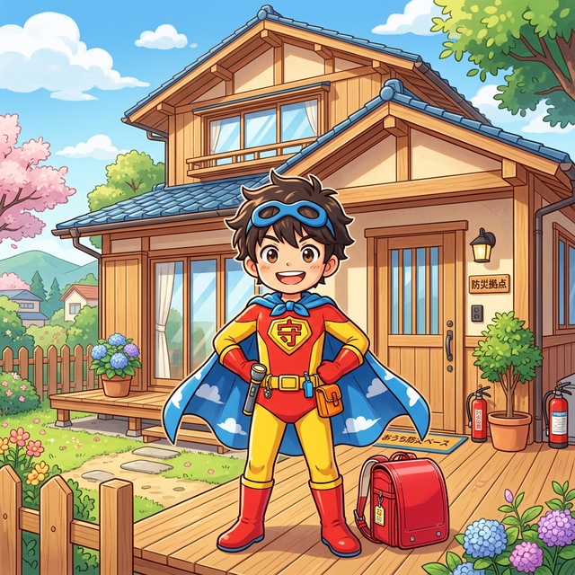
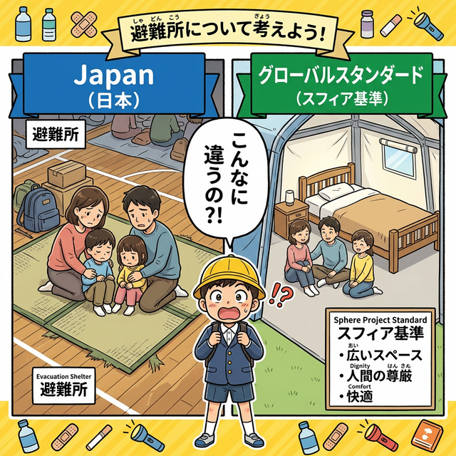
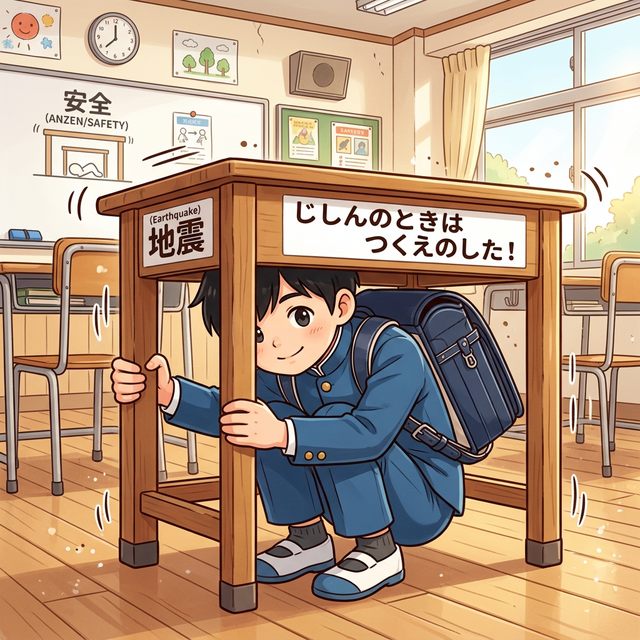
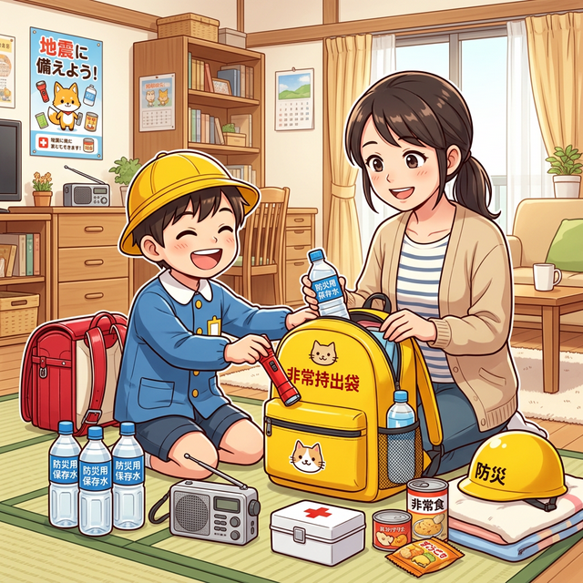

おうちが最強のひなんばしょ！
在宅避難ラボ｜武蔵野市
「避難所に行く」だけが避難じゃない！
自分の家を最強のひなんばしょ（基地）にしよう！🔥

まずはカンタンな説明から。「もっと詳しく」でくわしい情報も読めるよ！知れば知るほど、今すぐじゅんびしたくなるかも！？
「ざいたくひなん」とは？
「避難所に行けば安心」は、実は大きな誤解。
避難所の現実を知ると、自宅の準備が最優先だとわかります。
🏛️ 国も都も「おうちにいていい」と言っている
おうちが安全で、食べ物と水の備えがあれば、わざわざ避難所に行かなくていいんです。
2024年12月、国（内閣府）がルールを見直しました。
「おうちが安全なら、避難所には来なくていい」という方向にかわったんです。
東京都も武蔵野市も、同じことを言っています。
🏛️ 国・東京都・武蔵野市の具体的な方針を見る（出典付き）
「住家が安全で生活が可能な状態にある場合、また当面の食料・飲料水等を確保できている場合には、避難所への避難は不要」と明記。2024年12月に避難所運営ガイドラインを改定し、在宅避難者にも食料・物資が届く仕組みを整備。
出典：内閣府「在宅・車中泊避難者等の支援の手引き」（令和6年6月）／避難所運営ガイドライン（令和6年12月改定）
都民の約900万人がマンション等に居住。耐震基準を満たしたマンションでは「できる限り避難所に行かず、自宅にとどまり身を守る」よう要請。地域防災計画（震災編）に在宅避難の考え方を初めて明記（2023年修正）。
出典：東京都地域防災計画（令和5年修正）／東京新聞 2023年5月報道
「自宅が安全なら避難所へ行かず、自宅での生活継続を」と呼びかけ。在宅避難を推奨する方針を公式に掲げている。
出典：武蔵野市防災安全センターウェブサイト
😰 避難所って、実はどんなところ？
「避難所に行けばなんとかなる」…実は、そうじゃないんです。
実際に被災した人たちが口をそろえて言うのは、「想像よりずっとつらかった」という言葉。
一人が使えるスペースはたたみ1枚分（1.65㎡）だけ。
トイレは50人に1つ。カーテンもなくてプライバシーはほぼゼロ。

家族みんなでぎゅうぎゅう。
通路も広々でプライバシーも👍
⚠️ 日本のひなんじょは、世界の基準の半分以下の広さなんだ。
だからこそ「自宅」を最強の安全地帯（あんぜんちたい）にしておくのが大事！
📋 避難所の実態と国際基準を比べてみる
| 項目 | 😓 日本の避難所 | 🌍 スフィア基準（国際標準） |
|---|---|---|
| 🏠 1人のスペース | 約1.65㎡（たたみ1枚） | 3.5㎡以上（たたみ2枚超） |
| 🚽 トイレの数 | 50人に1つが目安 | 最大 20人に1つ |
| 😴 寝る場所 | 体育館の硬い床に雑魚寝 | 床から離れた寝床を推奨 |
| 🔊 プライバシー | カーテンもなく会話が筒抜け | 仕切り等でプライバシーを確保 |
| 😷 感染症対策 | 大勢が密集しやすい | 適切な換気・間隔を規定 |
| 👶 子供・要配慮者 | 泣き声・鳴き声で周囲に気を使う | 要配慮者への個別対応を規定 |
国際NGOや国連機関が1997年に定めた「災害・紛争時の被災者支援の最低基準」です。難民キャンプや被災地支援で世界共通のルールとして使われています。日本の避難所は、この国際基準を大幅に下回っているのが現状で、改善に向けた議論が続いています。
おうちが安全で、食べ物・水の備えがあれば、家にいる方がずっと快適で安全。
でも「備えた人だけ」がこの選択肢を使えます。備えていない人は、避難所に行くしかない。
🏡 おうちにいると、こんなにいいことがある！
防災グッズを揃えて在宅避難できるようにした人は、みんなこう言います。
「備えておいてよかった。おうちにいられてよかった」
- ✅ 自分のベッドで眠れる → 体育館の固い床で雑魚寝しなくていい
- ✅ 家族だけのプライベートな空間 → 知らない人に囲まれてストレスがたまらない
- ✅ 子ども・お年寄り・ペットも一緒にいられる → 避難所では特につらい思いをする人たちが安心
- ✅ かぜやウイルスをもらうリスクがない → 大勢が密集する避難所では感染症が広がりやすい
- ✅ おうちにいながら食料・支援物資が届く → 2024年のルール改定で、在宅の人にも物資が届く仕組みになった
⚠️ おうちにいていい？チェックリスト
おうちが安全で、食べ物・水の備えがあれば、おうちにいていいんです！
でも、こんな時は避難所へ行きましょう。
✅ おうちにいていい
- おうちがこわれていない
- 火事・浸水のキケンがない
- 耐震基準を満たした建物（1981年以降の建物が目安）
- 3日分以上の食べ物・水がある
❌ 避難所へ行こう
- 建物が傾いている・ひびが入っている
- 火事・浸水のキケンがある
- 古い建物（1981年より前に建てられた）
- 食べ物・水の備えがない
耐震基準を満たした建物に住んでいれば、あとは備蓄だけ。今すぐ始められます。
地震のときどうする？
東京には、今後30年以内に大きな地震が来る確率が70%以上！
今のうちに「どうすればいいか」を知っておけば、いざというとき体が動きます。
🔔 揺れたら、まず3つ！
だから今のうちに「体が自然に動く」くらい覚えておきましょう。それが命を守ります。

📋 場所別の詳しい行動手順を見る
- 1頭を守る
クッションや座布団で頭を保護。テーブルの下に隠れる - 2火を消す
揺れが収まってから（揺れている最中は無理しない） - 3出口を確保
ドアを開けて逃げ道を作る。ドアが歪むと出られなくなる - 4外に出ない
落下物が危険！揺れが収まるまで建物内で待機 - 5情報収集
ラジオ・スマホでNHKをチェック。デマに注意
テーブルの下に隠れる。テーブルがなければ頭を抱えて低い姿勢で。窓やガラスから離れること！
ドアを先に開けてから身を守る。ドアが歪むと出られなくなることがある。
建物から離れ、カバンや手で頭を守る。ブロック塀・電柱から距離を取る。
つり革や手すりをしっかり持つ。急ブレーキに備えて前のめりにならない。
🏢 マンションに住んでいる人へ：地震の後に起きること
地震で揺れが収まった後、マンションでは特有の問題が起きます。
知らないと「揺れは大丈夫だったのに、その後が大変だった」ということになります。
⚠️ 地震後にマンションで起こること（詳しく）
地震後は自動停止。復旧まで数日かかることも。高層階の住民は何度も階段を往復することになります。
給水ポンプが止まると水が出ない。高層階ほど被害が大きい。お風呂・トイレが使えない状況が数日続くことも。
排水管が破損しているとトイレを流すと下の階に漏れる。確認なく流すと大惨事になります。
情報収集ができなくなる。モバイルバッテリーやポータブル電源がないと情報難民になります。
簡易トイレ・ポータブル電源・備蓄水があれば、マンションでも数日は快適に在宅避難できます。
大雨・台風への備え
台風は地震と違って、数日前から準備できる！
武蔵野市でも過去に浸水被害が起きています。来てから慌てないために、今のうちに準備しよう。
📅 台風が来る前にやること（チェックリスト）
天気予報に台風が出たら、すぐに動き始めましょう。当日では遅いんです。
- 1ハザードマップで自宅の危険度を確認
武蔵野市の浸水リスクを事前にチェック - 2非常持ち出し袋の中身を確認・補充
食料・水・薬・充電器など - 3窓のシャッター・雨戸を閉める準備
飛来物でガラスが割れるのを防ぐ - 4排水口の落ち葉・ゴミを清掃
詰まりを防いで内水氾濫リスクを減らす - 5スマホの充電を満タンに
停電に備えてモバイルバッテリーも充電 - 6食料・飲料水の在庫確認
最低3日分・理想7日分 - 7避難場所・避難ルートを家族で確認
担当の避難所と集合場所を決めておく
🚨 警戒レベルって何？どうすればいい？
| 警戒レベル | 状況 | 取るべき行動 |
|---|---|---|
| レベル1 | 大雨注意報など | ハザードマップを確認 |
| レベル2 | 大雨・洪水警報 | 避難の準備を開始 |
| レベル3 | 高齢者等避難 | 高齢者・障がい者は避難 |
| レベル4 | 避難指示 | 全員今すぐ避難！ |
| レベル5 | 緊急安全確保 | 命を守る最善の行動を |
レベル5は「もう災害が起きている」状況。そこまで待ってはいけません。
🌊 「うちは川がないから大丈夫」は危険！
大雨で下水がいっぱいになって、道路や建物に水があふれ出す「内水氾濫」という現象です。武蔵野市でも実際に起きています。
🌧️ 武蔵野市で起こりうる浸水リスクを詳しく見る
大雨で下水処理が追いつかず、道路・建物に水が溢れる。武蔵野市では千川周辺などで過去に発生。川沿いでなくても自宅に水が入ってくることがある。最悪、1階が浸水する。
神田川・善福寺川・玉川上水など近隣の河川が増水した場合、低地での浸水リスクが上昇する。2019年台風19号では周辺地域で甚大な被害が出た。
リスクが低い地域ならおうちにいるのが有力。高い地域なら早めに避難の準備を。
防災（ぼうさい）グッズ完全ガイド
ひなんじょはとってもたいへん。でも、そなえがあればおうちが最強のひなんばしょ（基地）になるよ！
大家さんがえらんだ10カテゴリで今すぐじゅんびしよう！

😨 もし今、何も準備していない状態で災害が来たら？
飲み水・トイレが使えない
情報が入らず孤立する
コンビニも閉まっている
たたみ1枚分の極限空間
水・食べ物・ポータブル電源・簡易トイレ。これさえあれば、おうちで数日間、安心して過ごせます。
🎒 1. 避難袋・バッグ
PR
PR
PR
🍙 2. 非常食・飲料水
PR
PR
☕ 大家さんイチオシ：茅乃舎のフリーズドライ味噌汁
防災備蓄に「おいしさ」をプラス。お湯を注ぐだけの本格だし味噌汁・お吸いもの。
ストレスの多い被災時こそ、食事でほっとできる一杯が力になります。
公式サイト・Amazonどちらでも購入できます。
💡 3. 照明・電源
🔋 4. ポータブル電源
PR
PR
PR
PR
PR
🔥 5. カセットガス対応グッズ
防災グッズを選ぶとき、意外と見落としがちなのが「燃料の種類」です。コンロはカセットガス、発電機はガソリン、暖房は灯油…とバラバラにしてしまうと、災害時に大変なことになります。
カセットボンベはコンビニ・スーパー・ホームセンターどこでも売っています。ガソリンや灯油は専門店が必要ですが、カセットガスは徒歩圏内で調達可能。災害直後でも比較的入手しやすい燃料です。
カセットコンロ・発電機・ストーブ・ランタン、すべて同じボンベが使えます。「コンロのボンベは残ってるけど発電機のガソリンがない…」という悲劇が起きません。
ガソリンは保管に専用容器が必要で劣化も早い。カセットボンベは常温で長期保管（約7年）が可能で、普段のキャンプや料理でも使い切れるのでローテーションも簡単です。
カセットガス発電機・ストーブは一酸化炭素中毒の危険があるため、必ず屋外または十分な換気をして使用してください。発電機は屋外専用です。
※ボンベ24本（2ケース）あれば、3〜7日間の在宅避難をカバーできる目安です。
🚰 6. 衛生・トイレ
🩹 7. 救急・医療
📻 8. 情報収集
🛏️ 9. 在宅避難・快適グッズ
🏠 10. 住まいの備え
武蔵野市の避難所一覧
市内の小中学校18校＋都立高校2校、合計20か所が避難所になります。
「自分の担当の学校じゃないといけない」ということはありません。どの避難所でも受け入れてもらえます。
🗺️ 武蔵野市 浸水ハザードマップ
武蔵野市には大きな川はありませんが、大雨で水があふれる「内水氾濫」のリスクがあります。
特に千川周辺や低い場所では浸水が起きやすく、過去にも被害が発生しています。
川が氾濫するのではなく、大雨で下水処理が追いつかず、道路や建物に水があふれ出す現象です。 「川が近くにないから安全」とは言えないんです。
お問い合わせ：武蔵野市役所 防災課 ☎ 0422-60-1821
🏫 一時集合場所・避難所一覧（20か所）
※一時集合場所は校庭、避難所は体育館等が使用されます。
| 記号 | 避難所名 | 所在地 | 対象居住地域（目安） |
|---|---|---|---|
| ① | 第一小学校 | 吉祥寺本町4丁目17番16号 | 吉祥寺本町2丁目1番〜20番 吉祥寺本町2丁目24番〜34番 吉祥寺本町4丁目 |
| ② | 第二小学校 | 境4丁目2番15号 | 関前5丁目 境2丁目1番〜5番 境4丁目1番〜11番 |
| ③ | 第三小学校 | 吉祥寺南町2丁目35番9号 | 吉祥寺南町1丁目〜5丁目 |
| ④ | 第四小学校 | 吉祥寺北町2丁目4番5号 | 吉祥寺北町1丁目〜2丁目 |
| ⑤ | 第五小学校 | 関前3丁目2番20号 | 西久保2丁目〜3丁目 関前3丁目2番〜3番 |
| ⑥ | 大野田小学校 | 吉祥寺北町4丁目11番37号 | 吉祥寺北町3丁目1番〜9番 吉祥寺北町4丁目 緑町1丁目1番〜3番 緑町2丁目1番〜3番 |
| ⑦ | 境南小学校 | 境南町2丁目27番27号 | 境南町1丁目〜5丁目 |
| ⑧ | 本宿小学校 | 吉祥寺東町4丁目1番9号 | 吉祥寺東町3丁目〜4丁目 |
| ⑨ | 千川小学校 | 八幡町3丁目5番25号 | 緑町1丁目4番〜8番 八幡町1丁目 八幡町3丁目〜4丁目 |
| ⑩ | 井之頭小学校 | 吉祥寺本町3丁目27番19号 | 御殿山1丁目〜2丁目 吉祥寺本町2丁目21番〜23番 吉祥寺本町2丁目35番 吉祥寺本町3丁目 中町1丁目 |
| ⑪ | 関前南小学校 | 関前3丁目37番26号 | 関前2丁目〜3丁目1番 関前3丁目4番〜41番 関前4丁目 |
| ⑫ | 桜野小学校 | 桜堤1丁目8番19号 | 桜堤2丁目〜3丁目 |
| ⑬ | 第一中学校 | 中町3丁目9番5号 | 中町2丁目〜3丁目 |
| ⑭ | 第二中学校 | 桜堤1丁目7番31号 | 境5丁目 桜堤1丁目 |
| ⑮ | 第三中学校 | 吉祥寺東町1丁目23番8号 | 吉祥寺東町1丁目〜2丁目 吉祥寺本町1丁目 |
| ⑯ | 第四中学校 | 吉祥寺北町5丁目11番41号 | 吉祥寺北町3丁目10番〜17番 吉祥寺北町5丁目 緑町3丁目 |
| ⑰ | 第五中学校 | 関前2丁目10番20号 | 西久保1丁目 関前1丁目 |
| ⑱ | 第六中学校 | 境3丁目20番10号 | 境1丁目 境3丁目 |
| ⑲ | 都立武蔵高校 | 境4丁目13番28号 | 境2丁目6番〜27番 境4丁目12番〜16番 |
| ⑳ | 都立武蔵野北高校 | 八幡町2丁目3番10号 | 緑町2丁目4番〜6番 八幡町2丁目 |
出典：武蔵野市 一時集合場所・避難所一覧
⚠️ 避難所を使うときに知っておいてほしいこと
- 🏫 一時集合場所（校庭）：地震の直後に近所の人が集まって、みんなが無事かどうか確認する場所
- 🏠 避難所（体育館など）：おうちに住めなくなった人が泊まれる場所。おうちが安全なら使わなくてOK
- 📋 担当地域は目安：どこの避難所にいっても受け入れてもらえます。一番近い場所に行けばOK
- 📞 最新情報は市に確認：武蔵野市役所 危機管理課 ☎ 0422-60-1853
防災クイズに挑戦！
全5問。楽しみながら防災の知識を確認しよう！全問正解を目指せ！
🎉 クイズ完了！
点
大家さんについて
このサイトを作った武蔵野市の大家さんのじこしょうかいだよ。
くまごろう（武蔵野市の大家さん）
武蔵野市でマンションを経営する大家さんです。
住んでいる方みんなに、安心して暮らしてほしいという思いから、このサイトを作りました。
マンションのオーナーとして、「地震や台風が来たとき、住んでいる方たちはどうすれば安全でいられるか」をずっと考えてきました。
「避難所に行く」だけが答えじゃない。「おうちで安全に過ごす」という選択肢をもっと多くの人に知ってほしくて、このサイトを作りました。
🏢 マンションオーナー視点の防災
きちんと管理されたマンションは、木造の一戸建てよりも地震に強い建物です。
1981年以降に建てられた建物（新耐震基準）は、震度6強でも倒壊しないよう設計されています。
自分の部屋が安全なら、わざわざ不便な避難所に行く必要はありません。
その代わり、しっかりとした備蓄と準備が必要です。
📚 参考文献・出典一覧
内閣府「在宅避難者支援の手引き」 内閣府「避難情報に関するガイドライン」 東京都「マンション居住者の在宅避難」 武蔵野市「災害時の体制・避難場所」 武蔵野市「防災情報マップ・浸水ハザードマップ」（令和6年7月更新） 武蔵野市「一時集合場所・避難所・帰宅困難者一時滞在施設」 気象庁「警戒レベルと避難情報」 国土交通省「重ねるハザードマップ」※掲載情報は作成時点のものです。最新情報は各機関の公式ページでご確認ください。